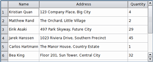

QTableView Class
The QTableView class provides a default model/view implementation of a table view. More...
| Header: | #include <QTableView> |
| CMake: | find_package(Qt6 REQUIRED COMPONENTS Widgets) target_link_libraries(mytarget PRIVATE Qt6::Widgets) |
| qmake: | QT += widgets |
| Inherits: | QAbstractItemView |
| Inherited By: |
Properties
|
|
Public Functions
| QTableView(QWidget *parent = nullptr) | |
| virtual | ~QTableView() |
| void | clearSpans() |
| int | columnAt(int x) const |
| int | columnSpan(int row, int column) const |
| int | columnViewportPosition(int column) const |
| int | columnWidth(int column) const |
| Qt::PenStyle | gridStyle() const |
| QHeaderView * | horizontalHeader() const |
| bool | isColumnHidden(int column) const |
| bool | isCornerButtonEnabled() const |
| bool | isRowHidden(int row) const |
| bool | isSortingEnabled() const |
| int | rowAt(int y) const |
| int | rowHeight(int row) const |
| int | rowSpan(int row, int column) const |
| int | rowViewportPosition(int row) const |
| void | setColumnHidden(int column, bool hide) |
| void | setColumnWidth(int column, int width) |
| void | setCornerButtonEnabled(bool enable) |
| void | setGridStyle(Qt::PenStyle style) |
| void | setHorizontalHeader(QHeaderView *header) |
| void | setRowHeight(int row, int height) |
| void | setRowHidden(int row, bool hide) |
| void | setSortingEnabled(bool enable) |
| void | setSpan(int row, int column, int rowSpanCount, int columnSpanCount) |
| void | setVerticalHeader(QHeaderView *header) |
| void | setWordWrap(bool on) |
| bool | showGrid() const |
| QHeaderView * | verticalHeader() const |
| bool | wordWrap() const |
Reimplemented Public Functions
| virtual QModelIndex | indexAt(const QPoint &pos) const override |
| virtual void | scrollTo(const QModelIndex &index, QAbstractItemView::ScrollHint hint = EnsureVisible) override |
| virtual void | setModel(QAbstractItemModel *model) override |
| virtual void | setRootIndex(const QModelIndex &index) override |
| virtual void | setSelectionModel(QItemSelectionModel *selectionModel) override |
| virtual QRect | visualRect(const QModelIndex &index) const override |
Public Slots
| void | hideColumn(int column) |
| void | hideRow(int row) |
| void | resizeColumnToContents(int column) |
| void | resizeColumnsToContents() |
| void | resizeRowToContents(int row) |
| void | resizeRowsToContents() |
| void | selectColumn(int column) |
| void | selectRow(int row) |
| void | setShowGrid(bool show) |
| void | showColumn(int column) |
| void | showRow(int row) |
| void | sortByColumn(int column, Qt::SortOrder order) |
Reimplemented Protected Functions
| virtual void | currentChanged(const QModelIndex ¤t, const QModelIndex &previous) override |
| virtual int | horizontalOffset() const override |
| virtual void | initViewItemOption(QStyleOptionViewItem *option) const override |
| virtual bool | isIndexHidden(const QModelIndex &index) const override |
| virtual QModelIndex | moveCursor(QAbstractItemView::CursorAction cursorAction, Qt::KeyboardModifiers modifiers) override |
| virtual void | paintEvent(QPaintEvent *event) override |
| virtual void | scrollContentsBy(int dx, int dy) override |
| virtual QModelIndexList | selectedIndexes() const override |
| virtual void | selectionChanged(const QItemSelection &selected, const QItemSelection &deselected) override |
| virtual void | setSelection(const QRect &rect, QItemSelectionModel::SelectionFlags flags) override |
| virtual int | sizeHintForColumn(int column) const override |
| virtual int | sizeHintForRow(int row) const override |
| virtual void | timerEvent(QTimerEvent *event) override |
| virtual void | updateGeometries() override |
| virtual int | verticalOffset() const override |
| virtual QSize | viewportSizeHint() const override |
| virtual QRegion | visualRegionForSelection(const QItemSelection &selection) const override |
Protected Slots
| void | columnCountChanged(int oldCount, int newCount) |
| void | columnMoved(int column, int oldIndex, int newIndex) |
| void | columnResized(int column, int oldWidth, int newWidth) |
| void | rowCountChanged(int oldCount, int newCount) |
| void | rowMoved(int row, int oldIndex, int newIndex) |
| void | rowResized(int row, int oldHeight, int newHeight) |
Detailed Description

A QTableView implements a table view that displays items from a model. This class is used to provide standard tables that were previously provided by the QTable class, but using the more flexible approach provided by Qt's model/view architecture.
The QTableView class is one of the Model/View Classes and is part of Qt's model/view framework.
QTableView implements the interfaces defined by the QAbstractItemView class to allow it to display data provided by models derived from the QAbstractItemModel class.
Navigation
You can navigate the cells in the table by clicking on a cell with the mouse, or by using the arrow keys. Because QTableView enables tabKeyNavigation by default, you can also hit Tab and Backtab to move from cell to cell.
Visual Appearance
The table has a vertical header that can be obtained using the verticalHeader() function, and a horizontal header that is available through the horizontalHeader() function. The height of each row in the table can be found by using rowHeight(); similarly, the width of columns can be found using columnWidth(). Since both of these are plain widgets, you can hide either of them using their hide() functions. Each header is configured with its highlightSections and sectionsClickable properties set to true.
Rows and columns can be hidden and shown with hideRow(), hideColumn(), showRow(), and showColumn(). They can be selected with selectRow() and selectColumn(). The table will show a grid depending on the showGrid property.
The items shown in a table view, like those in the other item views, are rendered and edited using standard delegates. However, for some tasks it is sometimes useful to be able to insert widgets in a table instead. Widgets are set for particular indexes with the setIndexWidget() function, and later retrieved with indexWidget().
|  | By default, the cells in a table do not expand to fill the available space. You can make the cells fill the available space by stretching the last header section. Access the relevant header using horizontalHeader() or verticalHeader() and set the header's stretchLastSection property. To distribute the available space according to the space requirement of each column or row, call the view's resizeColumnsToContents() or resizeRowsToContents() functions. |
Coordinate Systems
For some specialized forms of tables it is useful to be able to convert between row and column indexes and widget coordinates. The rowAt() function provides the y-coordinate within the view of the specified row; the row index can be used to obtain a corresponding y-coordinate with rowViewportPosition(). The columnAt() and columnViewportPosition() functions provide the equivalent conversion operations between x-coordinates and column indexes.
See also QTableWidget, View Classes, QAbstractItemModel, QAbstractItemView, and Table Model Example.
Property Documentation
cornerButtonEnabled : bool
This property holds whether the button in the top-left corner is enabled
If this property is true then button in the top-left corner of the table view is enabled. Clicking on this button will select all the cells in the table view.
This property is true by default.
Access functions:
| bool | isCornerButtonEnabled() const |
| void | setCornerButtonEnabled(bool enable) |
gridStyle : Qt::PenStyle
This property holds the pen style used to draw the grid.
This property holds the style used when drawing the grid (see showGrid).
Access functions:
| Qt::PenStyle | gridStyle() const |
| void | setGridStyle(Qt::PenStyle style) |
showGrid : bool
This property holds whether the grid is shown
If this property is true a grid is drawn for the table; if the property is false, no grid is drawn. The default value is true.
Access functions:
| bool | showGrid() const |
| void | setShowGrid(bool show) |
sortingEnabled : bool
This property holds whether sorting is enabled
If this property is true, sorting is enabled for the table. If this property is false, sorting is not enabled. The default value is false.
Note: . Setting the property to true with setSortingEnabled() immediately triggers a call to sortByColumn() with the current sort section and order.
Access functions:
| bool | isSortingEnabled() const |
| void | setSortingEnabled(bool enable) |
See also sortByColumn().
wordWrap : bool
This property holds the item text word-wrapping policy
If this property is true then the item text is wrapped where necessary at word-breaks; otherwise it is not wrapped at all. This property is true by default.
Note that even of wrapping is enabled, the cell will not be expanded to fit all text. Ellipsis will be inserted according to the current textElideMode.
Access functions:
| bool | wordWrap() const |
| void | setWordWrap(bool on) |
Member Function Documentation
[explicit] QTableView::QTableView(QWidget *parent = nullptr)
Constructs a table view with a parent to represent the data.
See also QAbstractItemModel.
[virtual noexcept] QTableView::~QTableView()
Destroys the table view.
void QTableView::clearSpans()
Removes all row and column spans in the table view.
See also setSpan().
int QTableView::columnAt(int x) const
Returns the column in which the given x-coordinate, x, in contents coordinates is located.
Note: This function returns -1 if the given coordinate is not valid (has no column).
See also rowAt().
[protected slot] void QTableView::columnCountChanged(int oldCount, int newCount)
This slot is called whenever columns are added or deleted. The previous number of columns is specified by oldCount, and the new number of columns is specified by newCount.
[protected slot] void QTableView::columnMoved(int column, int oldIndex, int newIndex)
This slot is called to change the index of the given column in the table view. The old index is specified by oldIndex, and the new index by newIndex.
See also rowMoved().
[protected slot] void QTableView::columnResized(int column, int oldWidth, int newWidth)
This slot is called to change the width of the given column. The old width is specified by oldWidth, and the new width by newWidth.
See also rowResized().
int QTableView::columnSpan(int row, int column) const
Returns the column span of the table element at (row, column). The default is 1.
See also setSpan() and rowSpan().
int QTableView::columnViewportPosition(int column) const
Returns the x-coordinate in contents coordinates of the given column.
int QTableView::columnWidth(int column) const
Returns the width of the given column.
See also setColumnWidth(), resizeColumnToContents(), and rowHeight().
[override virtual protected] void QTableView::currentChanged(const QModelIndex ¤t, const QModelIndex &previous)
Reimplements: QAbstractItemView::currentChanged(const QModelIndex ¤t, const QModelIndex &previous).
[slot] void QTableView::hideColumn(int column)
Hide the given column.
See also showColumn() and hideRow().
[slot] void QTableView::hideRow(int row)
Hide the given row.
See also showRow() and hideColumn().
QHeaderView *QTableView::horizontalHeader() const
Returns the table view's horizontal header.
See also setHorizontalHeader(), verticalHeader(), and QAbstractItemModel::headerData().
[override virtual protected] int QTableView::horizontalOffset() const
Reimplements: QAbstractItemView::horizontalOffset() const.
Returns the horizontal offset of the items in the table view.
Note that the table view uses the horizontal header section positions to determine the positions of columns in the view.
See also verticalOffset().
[override virtual] QModelIndex QTableView::indexAt(const QPoint &pos) const
Reimplements: QAbstractItemView::indexAt(const QPoint &point) const.
Returns the index position of the model item corresponding to the table item at position pos in contents coordinates.
[override virtual protected] void QTableView::initViewItemOption(QStyleOptionViewItem *option) const
Reimplements: QAbstractItemView::initViewItemOption(QStyleOptionViewItem *option) const.
bool QTableView::isColumnHidden(int column) const
Returns true if the given column is hidden; otherwise returns false.
See also isRowHidden().
[override virtual protected] bool QTableView::isIndexHidden(const QModelIndex &index) const
Reimplements: QAbstractItemView::isIndexHidden(const QModelIndex &index) const.
bool QTableView::isRowHidden(int row) const
Returns true if the given row is hidden; otherwise returns false.
See also isColumnHidden().
[override virtual protected] QModelIndex QTableView::moveCursor(QAbstractItemView::CursorAction cursorAction, Qt::KeyboardModifiers modifiers)
Reimplements: QAbstractItemView::moveCursor(QAbstractItemView::CursorAction cursorAction, Qt::KeyboardModifiers modifiers).
Moves the cursor in accordance with the given cursorAction, using the information provided by the modifiers.
See also QAbstractItemView::CursorAction.
[override virtual protected] void QTableView::paintEvent(QPaintEvent *event)
Reimplements: QAbstractScrollArea::paintEvent(QPaintEvent *event).
Paints the table on receipt of the given paint event event.
[slot] void QTableView::resizeColumnToContents(int column)
Resizes the given column based on the size hints of the delegate used to render each item in the column.
Note: Only visible columns will be resized. Reimplement sizeHintForColumn() to resize hidden columns as well.
See also resizeColumnsToContents(), sizeHintForColumn(), and QHeaderView::resizeContentsPrecision().
[slot] void QTableView::resizeColumnsToContents()
Resizes all columns based on the size hints of the delegate used to render each item in the columns.
See also resizeColumnToContents(), sizeHintForColumn(), and QHeaderView::resizeContentsPrecision().
[slot] void QTableView::resizeRowToContents(int row)
Resizes the given row based on the size hints of the delegate used to render each item in the row.
See also resizeRowsToContents(), sizeHintForRow(), and QHeaderView::resizeContentsPrecision().
[slot] void QTableView::resizeRowsToContents()
Resizes all rows based on the size hints of the delegate used to render each item in the rows.
See also resizeRowToContents(), sizeHintForRow(), and QHeaderView::resizeContentsPrecision().
int QTableView::rowAt(int y) const
Returns the row in which the given y-coordinate, y, in contents coordinates is located.
Note: This function returns -1 if the given coordinate is not valid (has no row).
See also columnAt().
[protected slot] void QTableView::rowCountChanged(int oldCount, int newCount)
This slot is called whenever rows are added or deleted. The previous number of rows is specified by oldCount, and the new number of rows is specified by newCount.
int QTableView::rowHeight(int row) const
Returns the height of the given row.
See also setRowHeight(), resizeRowToContents(), and columnWidth().
[protected slot] void QTableView::rowMoved(int row, int oldIndex, int newIndex)
This slot is called to change the index of the given row in the table view. The old index is specified by oldIndex, and the new index by newIndex.
See also columnMoved().
[protected slot] void QTableView::rowResized(int row, int oldHeight, int newHeight)
This slot is called to change the height of the given row. The old height is specified by oldHeight, and the new height by newHeight.
See also columnResized().
int QTableView::rowSpan(int row, int column) const
Returns the row span of the table element at (row, column). The default is 1.
See also setSpan() and columnSpan().
int QTableView::rowViewportPosition(int row) const
Returns the y-coordinate in contents coordinates of the given row.
[override virtual protected] void QTableView::scrollContentsBy(int dx, int dy)
Reimplements: QAbstractScrollArea::scrollContentsBy(int dx, int dy).
Scroll the contents of the table view by (dx, dy).
[override virtual] void QTableView::scrollTo(const QModelIndex &index, QAbstractItemView::ScrollHint hint = EnsureVisible)
Reimplements: QAbstractItemView::scrollTo(const QModelIndex &index, QAbstractItemView::ScrollHint hint).
Makes sure that the given index is visible in the table view, scrolling if necessary.
[slot] void QTableView::selectColumn(int column)
Selects the given column in the table view if the current SelectionMode and SelectionBehavior allows columns to be selected.
See also selectRow().
[slot] void QTableView::selectRow(int row)
Selects the given row in the table view if the current SelectionMode and SelectionBehavior allows rows to be selected.
See also selectColumn().
[override virtual protected] QModelIndexList QTableView::selectedIndexes() const
Reimplements: QAbstractItemView::selectedIndexes() const.
[override virtual protected] void QTableView::selectionChanged(const QItemSelection &selected, const QItemSelection &deselected)
Reimplements: QAbstractItemView::selectionChanged(const QItemSelection &selected, const QItemSelection &deselected).
void QTableView::setColumnHidden(int column, bool hide)
If hide is true the given column will be hidden; otherwise it will be shown.
See also isColumnHidden() and setRowHidden().
void QTableView::setColumnWidth(int column, int width)
Sets the width of the given column to be width.
See also columnWidth().
void QTableView::setHorizontalHeader(QHeaderView *header)
Sets the widget to use for the horizontal header to header.
See also horizontalHeader() and setVerticalHeader().
[override virtual] void QTableView::setModel(QAbstractItemModel *model)
Reimplements: QAbstractItemView::setModel(QAbstractItemModel *model).
[override virtual] void QTableView::setRootIndex(const QModelIndex &index)
Reimplements: QAbstractItemView::setRootIndex(const QModelIndex &index).
void QTableView::setRowHeight(int row, int height)
Sets the height of the given row to be height.
See also rowHeight().
void QTableView::setRowHidden(int row, bool hide)
If hide is true row will be hidden, otherwise it will be shown.
See also isRowHidden() and setColumnHidden().
[override virtual protected] void QTableView::setSelection(const QRect &rect, QItemSelectionModel::SelectionFlags flags)
Reimplements: QAbstractItemView::setSelection(const QRect &rect, QItemSelectionModel::SelectionFlags flags).
Selects the items within the given rect and in accordance with the specified selection flags.
[override virtual] void QTableView::setSelectionModel(QItemSelectionModel *selectionModel)
Reimplements: QAbstractItemView::setSelectionModel(QItemSelectionModel *selectionModel).
void QTableView::setSortingEnabled(bool enable)
If enable is true, enables sorting for the table and immediately trigger a call to sortByColumn() with the current sort section and order
Note: Setter function for property sortingEnabled.
See also isSortingEnabled().
void QTableView::setSpan(int row, int column, int rowSpanCount, int columnSpanCount)
Sets the span of the table element at (row, column) to the number of rows and columns specified by (rowSpanCount, columnSpanCount).
See also rowSpan() and columnSpan().
void QTableView::setVerticalHeader(QHeaderView *header)
Sets the widget to use for the vertical header to header.
See also verticalHeader() and setHorizontalHeader().
[slot] void QTableView::showColumn(int column)
Show the given column.
See also hideColumn() and showRow().
[slot] void QTableView::showRow(int row)
Show the given row.
See also hideRow() and showColumn().
[override virtual protected] int QTableView::sizeHintForColumn(int column) const
Reimplements: QAbstractItemView::sizeHintForColumn(int column) const.
Returns the size hint for the given column's width or -1 if there is no model.
If you need to set the width of a given column to a fixed value, call QHeaderView::resizeSection() on the table's horizontal header.
If you reimplement this function in a subclass, note that the value you return will be used when resizeColumnToContents() or QHeaderView::resizeSections() is called. If a larger column width is required by either the horizontal header or the item delegate, the larger width will be used instead.
See also QWidget::sizeHint, horizontalHeader(), and QHeaderView::resizeContentsPrecision().
[override virtual protected] int QTableView::sizeHintForRow(int row) const
Reimplements: QAbstractItemView::sizeHintForRow(int row) const.
Returns the size hint for the given row's height or -1 if there is no model.
If you need to set the height of a given row to a fixed value, call QHeaderView::resizeSection() on the table's vertical header.
If you reimplement this function in a subclass, note that the value you return is only used when resizeRowToContents() is called. In that case, if a larger row height is required by either the vertical header or the item delegate, that width will be used instead.
See also QWidget::sizeHint, verticalHeader(), and QHeaderView::resizeContentsPrecision().
[slot] void QTableView::sortByColumn(int column, Qt::SortOrder order)
Sorts the model by the values in the given column and order.
column may be -1, in which case no sort indicator will be shown and the model will return to its natural, unsorted order. Note that not all models support this and may even crash in this case.
See also sortingEnabled.
[override virtual protected] void QTableView::timerEvent(QTimerEvent *event)
Reimplements: QAbstractItemView::timerEvent(QTimerEvent *event).
[override virtual protected] void QTableView::updateGeometries()
Reimplements: QAbstractItemView::updateGeometries().
QHeaderView *QTableView::verticalHeader() const
Returns the table view's vertical header.
See also setVerticalHeader(), horizontalHeader(), and QAbstractItemModel::headerData().
[override virtual protected] int QTableView::verticalOffset() const
Reimplements: QAbstractItemView::verticalOffset() const.
Returns the vertical offset of the items in the table view.
Note that the table view uses the vertical header section positions to determine the positions of rows in the view.
See also horizontalOffset().
[override virtual protected] QSize QTableView::viewportSizeHint() const
Reimplements: QAbstractItemView::viewportSizeHint() const.
[override virtual] QRect QTableView::visualRect(const QModelIndex &index) const
Reimplements: QAbstractItemView::visualRect(const QModelIndex &index) const.
Returns the rectangle on the viewport occupied by the given index. If the index is hidden in the view it will return a null QRect.
[override virtual protected] QRegion QTableView::visualRegionForSelection(const QItemSelection &selection) const
Reimplements: QAbstractItemView::visualRegionForSelection(const QItemSelection &selection) const.
Returns the rectangle from the viewport of the items in the given selection.
Since 4.7, the returned region only contains rectangles intersecting (or included in) the viewport.